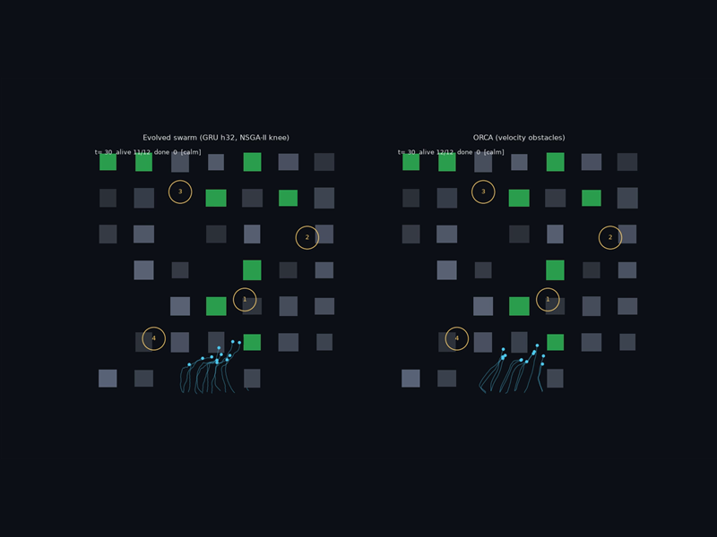
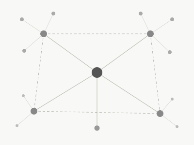
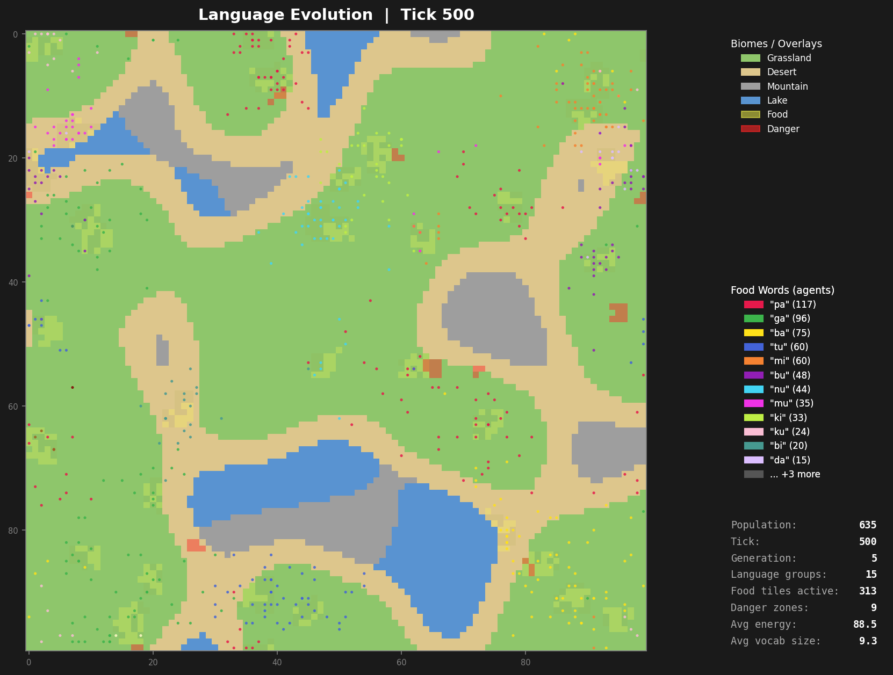
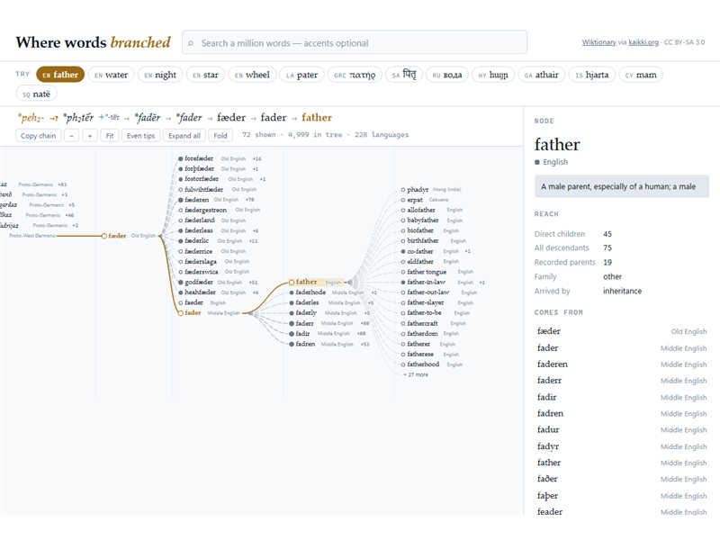
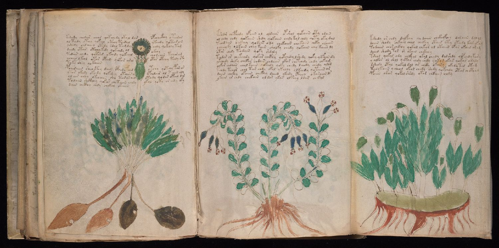
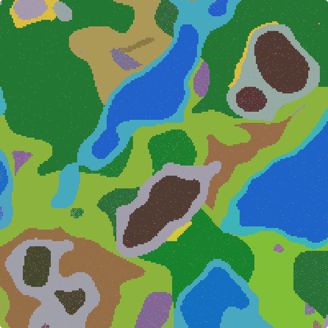

I graduated from the University of Oxford, Christ Church College in 2025 with an integrated Master of Mathematics and Computer Science (MMathCompSci). I am currently a Research Engineer at LIG Defence & Aerospace, serving as part of my mandatory military service for the Korean government until July 2028. At work, I (1) am currently developing AI solutions for autonomous maritime and multi-domain systems in collaboration with Palantir Technologies, and (2) maintain and refine our internal multi-OS framework, which provides core functionality across the company’s defence systems.
My research interests live on the border between mathematics and computer science. I opt for a mathematical approach to CS problems, looking for mathematically ‘elegant’ representations of CS. Currently my interests split across two fields: knowledge representation (using maths and computation to find connections between separate topics) and genetic algorithms (using simple mathematical rules to grow elegant models and solutions).
Outside of work and academics, I enjoy travelling and eating, with my most recent trips being in Marrakech, Morocco and Oita/Beppu, Japan. I also spend a lot of free time building projects with Claude Code, and am currently working on creating an artificial language evolved through genetic algorithms and simulation (check below).
Integrated Master of Mathematics and Computer Science (MMathCompSci)

Developing an evolutionary algorithm-based neural network brain shared by drones within a drone swarm, to re-create swarm movement behaviour without a leader-follower hierarchy (inspired by the movement of bees).
Genetic Algorithms · Emergent Behaviour
Inspired by Don Swanson and literature-based discovery: research into how knowledge can be classified, and how unrelated questions might connect to answers already published somewhere else.
Knowledge Formalisation · Automated Discovery
A simulation in which agents start with no language and evolve one through selection pressure alone. The current language consists of a 5-vowel, 12-consonant sound system, rigid word-order grammar, an evidential system, graded number, and ~84% who-did-what accuracy.
Genetic Algorithms · Computational Linguistics
Constructing a searchable etymology tree (including 2,000,000 words across 4,502 languages) built from Wiktionary to easily and efficiently visualise the etymological evolution of words.
Computational Linguistics · Data Visualisation
Research into the undeciphered 15th-century Voynich Manuscript. Statistical fingerprinting that resists frequency-matching shows the text looks generated by a template, rather than a cipher for a natural language.
Statistical Analysis · Computational Linguistics
A Pokémon simulator in which Pokémon are left to roam inside a virtual world. The simulation reveals how food chains, population booms, and extinctions emerge from the simple rules behind Pokémon interactions.
Agent-Based Simulation · Ecological Modelling